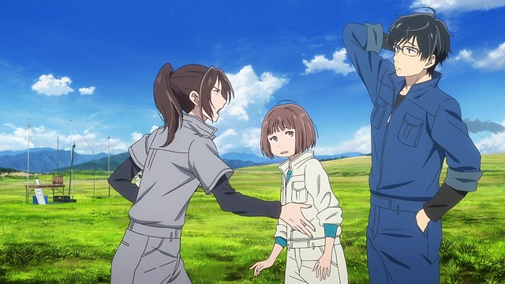

I feel like "Blue Thermal" was part of a string of just-average original anime feature films in the early 2020's. There were a lot of them, and American distributors seemed to pick them up and drop them off on disc with little fanfare, with theatrical releases only the most dedicated of otaku would be aware of. Coincidently, US distributor Eleven Arts is subject to most of these, including this film, and this was the last after a string of several releases before a sudden gap... hopefully not a sign of financial troubles. Anyway, catching up on a few, I was impressed by some of these movies, but "Blue Thermal" was on the lower end of that spectrum. It's clear from the promotional art that "Blue Thermal" focuses on airplane flight, but I wasn't aware that it's set at a University. Tamaki is a brand-new student, wide-eyed and full of hope and dreams, eager to start her college life, being social, and maybe having a romance or two. After trying a few different clubs, she accidently damages a plane from the school's Aviation club. After being swayed to pay for the damage, she's inadvertently become a new club member. It's a tough introduction thanks to a rude start from senior member Daisuke, but the club Captain, Jun, is much kinder, and sees potential in Tamaki. She does seem to have a knack for flying, and with her help, they might have a chance at winning the regionals, and even the national championships. And if both boys get to know her better... there may be an interesting love-triangle too. Like the 'Blue Thermal" wind formations that help raise the planes higher, maybe her life will get a lift from her new hobby and the friends she makes along the way. The movie does through in a few dramatic dilemas, mostly in the way of additional side characters, such as a pompous rival from another school, and Tamaki's older sister on a separate school team. But it's not super juicy or exciting. This is primarily a gateway into the main theme, which is hobbyist-aviation flying. Specifically, glider flying, with lightweight engine-less crafts that run silently, requiring concentration to read the wind to gain lift and speed. It's moderately educational, and like other anime that focuses on a hobby or cultural-topic, risks being a bit boring. Especially since the movie plays as a "slice-of-life" more than any other genre. There's a lot of potential for spicing up the story. Love interests and love conflicts, the excitement of competition, college-life drama, and so on. But the movie is safe and plays things by the numbers. The romance is hinted at but never explicitly comes out, The flights take hours to complete, and the scenes skip to the team on the ground waiting to see their plane in the distance, with all the excitement of watching a turkey roast in the oven. Drama and school life outside the club is added as an afterthought. The movie conveys what happens in the story well-enough, but is somewhat dull in the implementation.  If there's anything that helps save the movie, it's Tamaki herself. She's a bit hapless at first, and a little annoying for being quick to simultaneously snap back at someone or cry over her mistakes. Part of what makes the film a struggle to watch at first is for how harshly Daisuke treats her as a newcomer. But Tamaki comes around with a genuine love for the sport after experiencing what it's like to be in the air, and when she's fully engaged with it, the viewer becomes engaged with her. Similarly, when she's more engaged with the potential love-interests in front of her, that subplot gains steam. This helps set up a satisfying ending to it all, but everything before that was merely "fine." As harsh as I'm being on the story, it's probably something I'd appreciate more in a short manga series, which was in fact the original source (this movie's an adaptation). Animation is usually an improvement over a black-and-white page, but "Blue Thermal" is by the numbers again, lacking inspiration in the execution. Character designs are pleasant enough, but mostly plain. Animation is mostly limited and relies on a lot of static shots. Since the glider planes are motorless and sometimes fly in clear, cloudless skies, even those are largely static. My sense is that the film's budget was less than the average episode of a television anime. It's adequete, but the director's sensibilities might be better suited to live-action rather than animation. Notably, this appears to be Telecom Animation Film's first self-produced feature film after deacdes of supporting production of other works, but it's not a strong debut. Music helps elevate the emotions of each scene, but I can't remember any of it. Eleven Arts' Bluray release (originally meant to be a DVD combo, but appears to have been Bluray only) has no dub. The Japanese dub, like the rest of the production, is merely fine, and sounds more like a typical live-action-style of Japanese acting rather than a cartoon.If you're especially interested in aviation, I might recommend "Blue Thermal," but there are already several other anime on the subject, all of which are a little more interesting. The element of starting college life as a junior isn't really a big factor in the movie, but Tamaki's struggles of fitting in with her new environment might be relatable for that target audience. If the story leaned more into its potential or if the animation was more ambitious, there'd be more to talk about, but "Blue Thermal" never really gets off the ground.
- "Ani" More reviews can be found at : https://2danicritic.github.io/ Previous review: review_Blue_Drop Next review: review_Boy_and_the_World